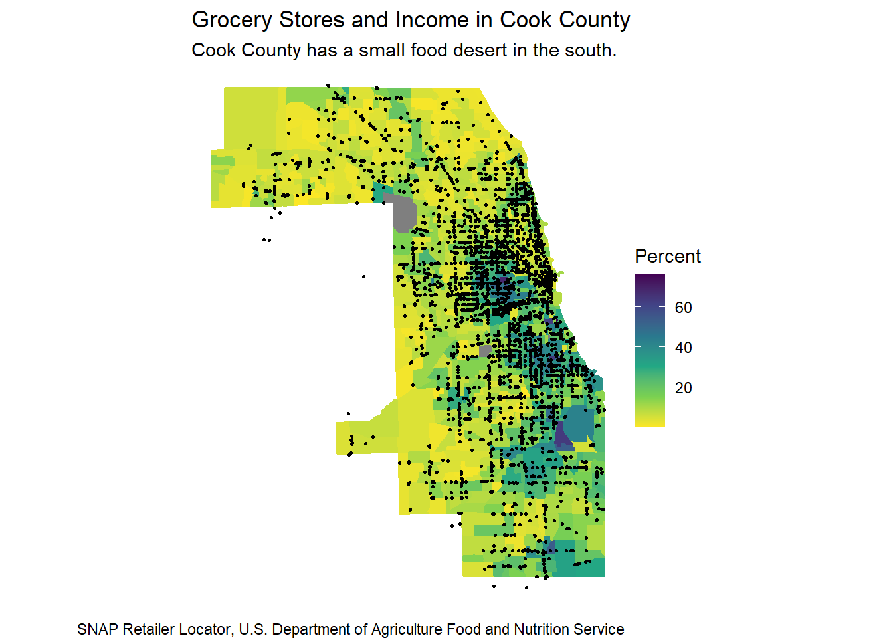

json_url <- "https://services1.arcgis.com/RLQu0rK7h4kbsBq5/arcgis/rest/services/Store_Locations/FeatureServer/0/query?where=State%20%3D%20'IL'%20AND%20County%20%3D%20'COOK'&outFields=Store_Name,City,State,County,Longitude,Latitude&outSR=4326&f=json"
county_stores <- fromJSON(json_url)
county_stores <- county_stores$features$attributes
county_map <- get_acs(geography = "tract",
variables = "B06012_002",
year = 2018,
state = "Illinois",
county = "Cook County",
geometry = TRUE,
summary_var = "B02001_001")## Getting data from the 2014-2018 5-year ACS## Downloading feature geometry from the Census website. To cache shapefiles for use in future sessions, set `options(tigris_use_cache = TRUE)`.##
|
| | 0%
|
|= | 1%
|
|== | 2%
|
|=== | 5%
|
|===== | 7%
|
|====== | 9%
|
|======== | 12%
|
|========== | 14%
|
|========== | 15%
|
|============ | 17%
|
|============= | 18%
|
|=============== | 21%
|
|================ | 23%
|
|================== | 26%
|
|=================== | 28%
|
|===================== | 31%
|
|======================= | 32%
|
|======================= | 34%
|
|========================= | 35%
|
|========================== | 37%
|
|============================ | 40%
|
|============================= | 42%
|
|=============================== | 45%
|
|================================ | 46%
|
|================================== | 49%
|
|=================================== | 50%
|
|==================================== | 51%
|
|==================================== | 52%
|
|====================================== | 54%
|
|======================================= | 56%
|
|========================================= | 58%
|
|========================================== | 60%
|
|============================================ | 63%
|
|============================================= | 65%
|
|============================================== | 66%
|
|=============================================== | 68%
|
|================================================ | 69%
|
|================================================= | 70%
|
|================================================== | 72%
|
|=================================================== | 72%
|
|==================================================== | 74%
|
|====================================================== | 77%
|
|======================================================= | 79%
|
|========================================================= | 82%
|
|========================================================== | 83%
|
|============================================================ | 86%
|
|============================================================== | 88%
|
|================================================================ | 91%
|
|================================================================= | 93%
|
|=================================================================== | 96%
|
|==================================================================== | 97%
|
|======================================================================| 100%county_map |>
mutate(Percent = (estimate/summary_est)*100) |>
ggplot(aes(fill = Percent, color = Percent)) +
geom_sf() +
scale_fill_viridis_c(direction = -1) +
scale_color_viridis_c(direction = -1) +
geom_point(data = county_stores,
inherit.aes = FALSE,
aes(x = Longitude,
y = Latitude),
size = 0.5) +
labs(title = "Grocery Stores and Income in Cook County",
subtitle = "Cook County has a small food desert in the south.",
caption = "SNAP Retailer Locator, U.S. Department of Agriculture Food and Nutrition Service") +
theme_void()